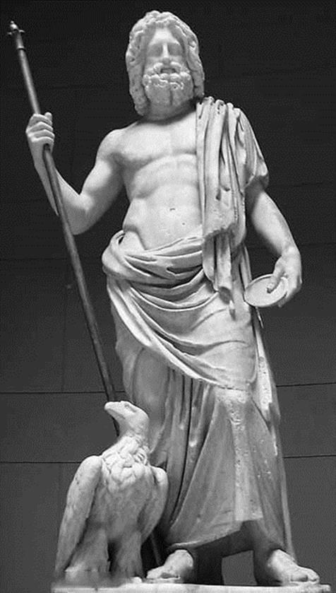

Lật đổ Ouranos, giành lấy quyền cai quản thế gian, thế nhưng Cronos vẫn chưa yên tâm. Thần vẫn lo sợ số phận mình có ngày sẽ kết thúc như Ouranos, nghĩa là có một ngày nào đó, những đứa con do Cronos này dứt ruột đẻ ra sẽ truất ngôi của bố nó. Thần nghĩ ra một cách để trừ hậu họa: nuốt các con vào bụng! Rhéa năm lần sinh nở đều chẳng nuôi lấy được một đứa nào. Hestia (thần thoại La Mã: Vesta), Déméter, Héra rồi Hadès, Poséidon lần lượt bị Cronos nuốt chửng vào bụng. Nữ thần Rhéa rất đỗi lo lắng và giận dữ. Hơn nữa nàng lại sắp đến ngày sinh nở. Lần này theo lời khuyên của nữ thần Đất mẹ-Gaia, nàng lánh sang đảo Crète. Ở đây trong một cái hang đá của ngọn núi Ida, nàng đã sinh đứa con trai út và đặt tên nó là Zeus (thần thoại La Mã: Jupiter). Để bảo vệ con thoát khỏi số phận các anh chị của nó, Rhéa lấy một hòn đá dài quấn tã lót vào nom y hệt như một đứa bé rồi trao cho chồng, không nghi ngờ gì, Cronos nuốt luôn đứa bé hòn đá vào bụng.

THẦN ZEUS
Tuổi thơ ấu, Zeus ở đảo Crète, tuy phải xa mẹ (vì Rhéa sau khi sinh xong trở về Hy Lạp) song vẫn được chăm sóc chu đáo. Ngày ngày hai tiên nữ Ida và Adrastée - những tiên nữ trú ngụ ở rừng già, đồng nội, bờ sông ngọn suối hay ở núi cao, hang sâu cho đến những thung lũng hoang vắng mà người Hy Lạp gọi bằng một cái tên chung là Nymphe52 - lấy sữa dê và mật ong nuôi đứa bé. Con dê thần Amalthée với bầu sữa lúc nào cũng căng, không bao giờ để chú bé Zeus phải khóc vì đói. Nó lại còn là người bạn thân thiết của Zeus, để cho Zeus khỏi khóc vì buồn. Tuy vậy cũng phải đề phòng nhỡ có lúc nào đó chẳng hiểu làm sao chú bé Zeus khóc thì phiền, rất phiền. Cronos mà nghe được tiếng khóc của Zeus thì số phận của chú thoát sao khỏi bị nuốt. Các quỷ thần Curètes lo việc đó. Bằng mọi cách, gõ trống, gõ chiêng khua vang binh khí, hò hét, kêu la... các Curètes phải làm cho hễ Zeus vừa cất tiếng khóc là bị át đi ngay. Cẩn thận hơn nữa, các Curètes còn lấy gỗ lấp, vít cửa hang thật kín không sót một kẽ hở nào để nhỡ ra Zeus có khóc thì cũng không một tiếng khóc nào lọt được ra ngoài.
Thường sau khi bú no rồi Zeus quay ra chơi đùa với “người bạn” dê của mình. Khi thì Amalthée dụi dụi đầu vờ húc chú bé Zeus, và chỉ dướn đầu lên đẩy nhẹ một cái là Zeus lăn kềnh ra đất. Khi thì Zeus nắm lấy đôi sừng của Amalthée mà vật, vật với tất cả sức lực của mình nhưng rồi Zeus lại lăn kềnh ra đất. Ngày tháng trôi đi, Zeus và “người bạn” Amalthée của mình sống với nhau thân thiết ấm cúng. Nhưng rồi một chuyện không may xảy ra. Zeus trong một lần chơi đùa với Amalthée đã... vặn gẫy băng mất một chiếc sừng của bạn! Có ai ngờ được Zeus đã lớn mau và khỏe mạnh đến thế. Zeus khổ sở vô cùng. Cậu chỉ còn biết an ủi Amalthée thân thiết với mình bằng một lời hứa chân tình, ân nghĩa. Zeus hứa, nếu sau này trở thành một vị thần có quyền thế, Zeus sẽ trả Amalthée chiếc sừng khác và sẽ ban cho Amalthée lúc nào cũng có thật nhiều, rõ thật nhiều hoa thơm, quả ngọt, trái chín, lá non.
Nói về chiếc sừng bị gãy của Amalthée, vì là chiếc sừng của con dê thần nên nó có phép lạ khác thường. Nếu ai có nó trong tay thì có thể ước gì được nấy. Zeus đem tặng chiếc sừng này cho hai tiên nữ đã nuôi dưỡng mình. Cái sừng Amalthée hay Cái sừng sung túc là một điển tích trong văn học thế giới chỉ sự phong phú dồi dào. Ở châu Âu người ta thường vẽ hoặc có khi trao tặng cho khách quý một chiếc sừng đựng đầy hoa quả để tượng trưng cho nguyện vọng và lời chúc tụng hạnh phúc, giàu có, ấm no.
Lại có một chuyện cũng nảy sinh ra điển tích Cái sừng sung túc. Đó là chuyện người anh hùng Héraclès giao đấu với thần Sông-Achéloos: Thần Sông đuối thế biến mình thành một con bò mộng, Héraclès nắm lấy sừng bò và bẻ gãy. Các tiên nữ Naïades, con của các thần Sông, đã nhặt chiếc sừng này làm thành một “lọ” hoa vô cùng đẹp đẽ. Từ đó ra đời điển tích Cái sừng sung túc.
[52] Tiếng Hy Lạp nymphe: thiếu nữ